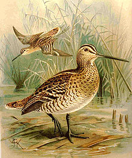
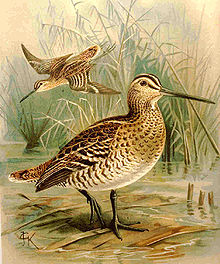

| Great Snipe Temporal range: 5.33 to 3.6 Ma, extant |
|
|---|---|
|  | |
| Conservation status | |
| Binomial name | |
| Gallinago media Latham, 1787 |
|
| Synonyms | |
|
| Great Snipe Temporal range: 5.33 to 3.6 Ma, extant |
|
|---|---|
|  | |
| Conservation status | |
| Binomial name | |
| Gallinago media Latham, 1787 |
|
| Synonyms | |
|
The Great Snipe, Gallinago media is a small stocky wader in the genus Gallinago.
This bird's breeding habitat is marshes and wet meadows with short vegetation in north eastern Europe and north western Russia. Great Snipes are migratory, wintering in Africa. The European breeding population is in steep decline.
The males display at a dusk lek during the breeding season, standing erect with chest puffed and tail fanned. They may jump into the air. They produce a variety of rattles, clicks, buzzes and whistles while displaying. 3-4 eggs are laid in a nest in a well-hidden location on the ground.
These birds forage in soft mud, probing or picking up food by sight. They mainly eat insects and earthworms, and occasional plant material. They are difficult to see, being well camouflaged in their habitat. When flushed from cover, they fly straight for a considerable distance before dropping back into vegetation.
At 26–30 cm in length and a 42–50 cm wingspan, adults are only slightly larger, but much bulkier, than Common Snipe and have a shorter bill. The body is mottled brown on top and barred underneath. They have a dark stripe through the eye. The wings are broad, and a pale wingbar is visible in flight.
The Great Snipe is one of the species to which the Agreement on the Conservation of African-Eurasian Migratory Waterbirds (AEWA) applies.

{kind=link}